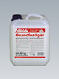
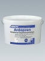
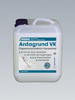
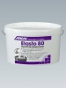
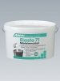
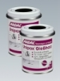
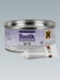
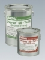

Грунтовки / добавки
Таблица применения:
ГРУНТОВКИ, ГИДРОИЗОЛЯЦИЯ, ВЫРАВНИВАНИЕ ПОВЕРХНОСТИ

Grundfestiger
Готовая к применению водная дисперсия синтетической смолы для грунтования впитывающих поверхностей под плитку, керамические покрытия и гидроизоляционный материал Флексдихт. Не содержит растворителей. Для внутреннего и наружного применения. Увеличивает несущую способность поверхности и повышает степень сцепления с основанием. Защищает чувствительные к воздействию влаги поверхности и уменьшает впитывание влаги. Грундфестигер пожаробезопасен и не имеет запаха, поэтому его можно применять в непроветриваемых помещениях.
Giscode D1
Расход: 80-150 г/м, зависит от поверхности и степени впитываемости основы.
Время высыхания: прим. 2 часа при +20°С и относительной влажности воздуха 60%.
Хранение: в сухом и прохладном месте, не боится мороза. Замерзшее средство постепенно разморозить, затем размешать.
Упаковка: канистры 1кг, 5кг и 10кг; пластмассовые бочки 150кг; контейнеры 600кг и 1000кг.

АрдапренArdapren
Неопрен - дисперсионная грунтовка, не содержащая растворителей, с хорошими свойствами сцепления со всеми используемыми основами. Для внутренних работ. Наносится на плотные и гладкие, впитывающие и не впитывающие поверхности для улучшения сцепления основы со шпаклевками и клеями. Может наноситься на поверхности, которые не постоянно находятся под воздействием влаги, например - в санузлах, ванных комнатах и кухнях частных жилых помещений.
Giscode D1
Расход: 90-150 г/м.кв., в зависимости от свойств поверхности.
Время высыхания: 2-4 часа. При нанесении на деревянные основания время высыхания составляет минимум 12 часов.
Хранение: в сухом и прохладном месте, беречь от мороза.
Упаковка : канистры 1кг, 5кг; пластмассовые бочки 150кг; контейнеры 1000кг.

Ардагрунд VKArdagrund VK
Растворимая в воде дисперсия синтетической смолы для грунтования впитывающих и не впитывающих поверхностей перед укладкой керамической плитки. Не содержит растворителей. Для использования внутри помещений. Благодаря применению этого средства увеличивается прочность соединения и уменьшается впитываемость основы. Улучшается прилипание шпаклевок и выравнивающих масс. Средство Ардагрунд VK разбавляется водой в соотношении 1:1. При нанесении на сильно впитывающие поверхности Ардагрунд VK можно разбавить водой в соотношении 1:3. Giscode D 1 Emicode EC 1
Расход: прим. 75 г/м.кв. (концентрата).
Время высыхания: прим. 2 часа при +20°С и относительной влажности воздуха 60%.
Хранение: в сухом и прохладном месте, беречь от мороза.
Упаковка : канистры 10кг, 20кг; пластмассовые бочки 150кг; контейнеры 600кг.

Эласто 80Elasto 80
Не содержащая растворителей дисперсия синтетической смолы для совместного использования с Ардалит Про, а также с нивелирной массой Ардалан N и выравнивающим раствором Ардалан AGM . Способ применения приводится в соответствующем техническом описании.
Giscode D1
Расход: см. техническое описание.
Хранение: хранить в сухом и прохладном месте, беречь от мороза.
Упаковка: ведро 5кг; пластмассовые бочки 150кг; контейнеры 1000кг

Эласто 71Elasto 71
Универсальное средство на основе синтетической смолы для улучшения качества растворов, штукатурок и материалов стяжек(Estrich). Не содержит растворителей. Для применения внутри и снаружи помещений.
Для улучшения качества применяется в:
- материалах бесшовных полов (стяжек), штукатурках и растворах;
- выравнивающих массах для бетона и цементных стяжек;
- ремонтных растворах для бетона, природного и искусственными камня;
- мелкозернистых растворов для ремонта облицовочного бетона
В качестве адгезионного слоя применяется для:
- штукатурок и цементных стяжек на плотных, гладких бетонных поверхностях или старом бетоне;
- при укладке плитки при помощи клеящего раствора на гладкие бетонные поверхности.
В качестве завершающего слоя:
- на стенах и бесшовных полах (стяжках) используется внутри и снаружи помещений.
Giscode D1
Пропорции смешивания (Эласто 71: вода) / Расход
Грунтовка 1: 3 / около 50 г/м2
Адгезионный слой 1: 2 / около 350 г/м2
Добавка в бесшовные полы (стяжки) и строительные растворы 1: 3 / около 35 кг/м3
Добавка в штукатурки 1: 5 / около 15 кг/м3
Хранение: хранить в сухом и прохладном месте, беречь от мороза.
Упаковка: ведро 5кг; пластмассовые бочки 150кг; контейнеры 600кг

Унипокс ГиссхарцUnipox Giessharz
Не содержащая растворителей, двухкомпонентная заливочная масса на базе модифицированной эпоксидной смолы. Используется внутри и снаружи помещений. Предназначена для заливки трещин и ложных швов, соединений на шпонках и вставных шипах, а также для заделки трещин в бесшовных полах. Может применяться на бесшовных полах с подогревом и других горизонтальных поверхностях. Трещины и ложные швы следует расширить минимум до 6 мм. При прямых крупных трещинах просверливаются отверстия диаметром минимум 12 мм на расстоянии прим. 10 см от линии трещины на длину прим. 2/3 бесшовного пола. Помимо этого, трещины можно укрепить и при помощи металлических стержней. Для этого, в частности, перпендикулярно трещинам на расстоянии прим. 30 см делается надрез с шириной минимум 8 мм, куда укладывается 10-см металлический стрежень диаметром 6 мм. Перед проведением работ удалить пыль из надрезов и просверленных отверстий. Основания должны быть сухими или слегка влажными.
Giscode RE 1
Открытое время: около 30 минут при температуре + 20 С
Механические нагрузки: примерно через 24 часа при температуре + 20 С
Хранение: в сухом и прохладном месте, не боится мороза.
Упаковка: 6 х 750 г банок в коробке.

Нибосан UP 50Nibosan UP 50
Заливочная смола из полиэстера
- обладает высокой вязкостью
- быстро затвердевает
Двухкомпонентная смола из полиэстера для санации бесшовных полов (стяжек) перед шпаклёвкой и наклейкой покрытий, а также для наклеивания металлических планок, профилей, природного и искусственного камня. Универсальная в применении.
Открытое время: примерно от 5 до 30 минут (в зависимости от температуры и доли отвердителя)
Нагрузка: примерно через 60 минут (+ 20 ° C и 2 - 3% отвердителя)
Хранение : хранить в сухом и прохладном месте, не боится мороза.
Упаковка: 4 банки х 1030 г в коробке.
Нибосан UP 60
Nibosan UP 60
Заливочная смола из полиэстера
- Низковязкая
- Быстро затвердевает
Двухкомпонентная смола из полиэстера для санации бесшовных полов (стяжек) перед шпаклёвкой и наклейкой покрытий, а также для наклеивания металлических профилей, природного и искусственного камня.
Хранение: хранить в сухом и прохладном месте, не боится мороза.
Открытое время: примерно от 5 до 45 минут (в зависимости от температуры и доли отвердителя)
Нагрузка: примерно через 60 минут (+ 20 ° C и 2 - 3% отвердителя)
Упаковка: 4 банки х 700 г в коробке.

Грунтовка Унипокс SBUnipox SB-Grundierung
Двухкомпонентная грунтовка на основе эпоксидной смолы. Не содержит растворителей. Применяется для впитывающих поверхностей перед нанесением Защитного Покрытия Унипокс SB .
Giscode RE1
Расход: 200-300 г/м.кв.
Хранение: в сухом и прохладном месте, не боится мороза. Замерзшую Грунтовку Унипокс SB медленно отогреть и тщательно перемешать.
Упаковка: комп. А - банка 3,33кг; комп. В – банка 1,67кг